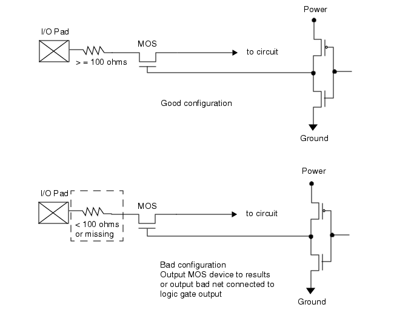

The perc::check_device and perc::check_net
commands can be used to check ESD configuration of pass gates.
The check in this example verifies the following
conditions:
A pad net
is neither power nor ground (it is a signal net).
The net is
connected to an S/D pin of a pass gate MOS device.
A resistor
of at least 100 ohms lies between the pad and the S/D pin.
Figure 1 shows a schematic representation of
both good and bad circuits.
Figure 1. Pass Gate With Resistor Protection
The objective is to find the bad configuration.
Procedure
- Case 1:
Pass Gates With Special Model Name
This case assumes the MOS transistor is of a specific
model that is used only for pass gates. This example finds pass
gates that meet the following criteria.
In this case, the set of nets for path type propagation is restricted
to the nets connected through pins of R devices having a property
“r” of less than 100.
Here are some possible SPICE representations of both good and
bad configurations. Nets on the same path are highlighted.
.SUBCKT TOPCELL I_O_Pad ...
...
M4 7 4 2 28 n_pg $$ Good. R9 protects this.
...
R9 I_O_Pad 2 200 ... $$ Path types not propagated here.
...
M5 6 3 I_O_Pad 28 n_pg ... $$ Bad. Drain tied to I_O_Pad.
...
M6 8 5 9 28 n_pg ... $$ Bad. Drain with path to I_O_Pad.
...
R10 I_O_Pad 9 50 ... $$ Path types propagated here.
These are the steps to follow to write a check for the bad configurations.
- Instruct
Calibre PERC to initialize the resistor property “r” by including
this statement in the rule file:
- Write
an initialization procedure that labels I_O_Pad nets. This initializes
the net label for the rule check. The procedure then initializes
the set of pins for path type propagation, which includes the pins
of R devices having an “r” property of less than 100. The procedure
propagates the I_O_Pad label across the pins of these resistors.
# Initialization proc for rule_6 checks
# Label I_O_Pad nets
# Propagate I/O pad label across resistors of value less than 100
proc init_6_1 {} {
perc::define_net_type "I_O_Pad" {I_O_Pad}
perc::create_net_path -type "r" -property "r < 100"
}
- Write
the rule check using one procedure. The main Tcl proc checks devices
in the design.
# Case 1
proc rule_6_1 {} {
perc::check_device -type {mn} -subtype {n_pg} \
-pinPathType { {s d} {I_O_Pad} } \
-comment "Pass-gate MOS with < 100 Ohm ESD protection"
}
The options to the perc::check_device command are as follows:
-type {mn} —
Checks for an MN device.
-subtype {n_pg} —
Checks for the model name n_pg.
-pinPathType { {s d} {I_O_Pad} } —
Checks whether the source or drain pin has a path to the I_O_Pad
path type.
-comment “Pass-gate MOS with less than 100 Ohm esd protection” — Specifies
a message that gets written to the Calibre PERC report for the rule_6_1 check
results.
- Case 2:
Pass Gates are generic MOS Transistors
This case assumes the pass gate is a generic NMOS or
PMOS device that is tied to the output of a logic gate. See Figure 1 for a schematic representation. This
case finds nets that meet these criteria:
The net is neither power nor ground (it
is a signal net).
The net is connected to the output of
a logic gate.
Either of the following conditions two
is true:
The net is connected to the gate pin
of a MOS device whose source or drain pin is tied directly to an
I/O pad.
The net is
connected to the gate pin of a MOS device whose source or drain
pin has a path to an I/O pad through a resistor of less than 100
ohms.
Here are some possible SPICE representations of both good and
bad configurations. Nets on the same path are highlighted.
.SUBCKT TOPCELL I_O_Pad
...
X19 VSS VDD 24 4 inv_1 $$ Output to M3 on net 4.
...
M3 7 4 2 28 n $$ Good. R9 protects this.
...
R9 I_O_Pad 2 200 ... $$ Path types not propagated here.
...
X20 VSS VDD 24 3 inv_1 $$ Output to M4 on net 3.
...
M4 6 3 I_O_Pad 27 n $$ Bad net 3. Drain tied to I_O_Pad.
...
X21 VSS VDD 18 5 inv_1 $$ Output to M6 on net 5.
...
M6 8 5 9 28 n $$ Bad net 5. Drain has path to I_O_Pad.
...
R10 I_O_Pad 9 50 $$ Path types propagated here.
These are the steps to follow to write a check for the bad configurations.
- Instruct
Calibre PERC to initialize the resistor property “r” by including
this statement in the rule file.
- Instruct
Calibre PERC to form logic gates from the netlist.
PERC LOAD perc.rules XFORM ALL INIT init_6 SELECT rule_6_2
Using the XFORM ALL keyword causes transformation
of the input netlist using device reduction, unused device filtering,
logic injection, and logic gate recognition before Calibre PERC
runs the rule checks. These transformations are guided by the relevant
LVS specification statements in the rule file.
- Specify
the following to disable logic injection:
LVS INJECT LOGIC NO
This is needed to ensure all logic gates
are recognized by Calibre PERC.
- Write
an initialization procedure that labels I_O_Pad, Power, and Ground
nets. This initializes the net type labels for the rule check. The
procedure propagates the I_O_Pad path type label across resistors
having an “r” property of less than 100.
# Initialization proc for rule_6 checks
# Label I_O_Pad nets
# Propagate I/O pad label across resistors of value less than 100
proc init_6_2 {} {
perc::define_net_type "I_O_Pad" {I_O_Pad}
perc::define_net_type "Power" {VDD?}
perc::define_net_type "Ground" {VSS?}
perc::create_net_path -type "r" -property "r < 100"
}
- Write
the rule check using two procedures. The main Tcl proc checks nets
in the design.
# Case 2
proc rule_6_2 {} {
perc::check_net -netType {!Power && !Ground} \
-condition rule_6_2_cond \
-comment "Pass-gate MOS with < 100 Ohm ESD protection"
}
The options to the perc::check_net command are as follows:
-netType {!Power && !Ground} —
Checks that it is neither a Power nor Ground net type.
-condition rule_6_2_cond —
For each net that passes the -netType criteria, send the net to
the rule_6_2_cond proc, which checks for the presence of a bad pass
gate.
-comment “Pass-gate MOS with less than 100 Ohm ESD protection” — Specifies
a message that gets written to the Calibre PERC report for the rule_6_2 check
results.
- Write
a subroutine that returns 1 if the net is connected to the output
of a logic gate and is also connected to the gate pin of a MOS device
whose source or drain pin is tied to the I_O_Pad net type directly,
or through a resistor with resistance less than 100.
# Subroutine for rule_6_2. Returns 1 if the net is connected
# to the output of a logic gate and is also connected to the gate
# pin of a MOS device whose source or drain pin is tied to an
# I/O pad directly, or through a resistor with resistance less
# than 100.
proc rule_6_2_cond {net} {
set logic_gate_count [perc::count -net $net -type {lvsGate} \
-pinAtNet {lvsOut}]
set result [perc::count -net $net -type {mp mn} \
-pinAtNet {g} \
-pinPathType { {s d} {I_O_Pad} } \
-list]
set pass_gate_count [lindex $result 0]
set pass_gate_devices [lindex $result 1]
if { $pass_gate_count > 0 && $logic_gate_count > 0 } {
# Show the pass-gate devices in the PERC report file
perc::report_base_result -title "Pass-gate MOS:" \
-list $pass_gate_devices
return 1
}
return 0
}
The perc::count command is used twice, with these
options in the first instance:
-net $net —
Counts objects on $net.
-type {lvsGate} —
Counts logic gates.
-pinAtNet {lvsOut} —
Checks if $net is connected to the output pin of a logic gate.
These options are used in the second instance:
-net $net —
Counts objects on $net.
-type {mp mn} —
Counts MN or MP devices.
-pinAtNet {g} —
Checks if $net is connected to the gate pin of the device.
-pinPathType { {s d} {I_O_Pad} } —
Checks if either the source or drain pin has a path to the I_O_Pad
path type.
-list —
Stores a list of the counted objects for output to the Calibre PERC
report file.
Results
The complete rule check follows. It must be
placed inside a TVF Function block containing a “package require
CalibreLVS_PERC” command and called from a PERC Load statement
in order to run it. See “Calibre PERC Example Rule Files” for related information.
LVS POWER NAME VDD?
LVS GROUND NAME VSS?
#########################################################################
### RULE 6
##########
# Initialization proc for rule_6_1 check
# Label I_O_Pad nets
# Propagate I/O pad label across resistors of value less than 100
proc init_6_1 {} {
perc::define_net_type "I_O_Pad" {I_O_pad}
perc::create_net_path -type "r" -property "r < 100"
}
# Case 1
proc rule_6_1 {} {
perc::check_device -type {mn} -subtype {n_pg} \
-pinPathType { {s d} {I_O_Pad} } \
-comment "Pass-gate MOS with < 100 Ohm ESD protection"
}
# Initialization proc for rule_6_2 check
# Label I_O_Pad, Power, and Ground nets
# Propagate I/O pad label across resistors of value less than 100
proc init_6_2 {} {
perc::define_net_type "I_O_Pad" {I_O_pad}
perc::define_net_type "Power" {VDD?}
perc::define_net_type "Ground" {VSS?}
perc::create_net_path -type "r" -property "r < 100"
}
# Case 2
proc rule_6_2 {} {
perc::check_net -netType {!Power && !Ground} \
-condition rule_6_2_cond \
-comment "Pass-gate MOS with < 100 Ohm ESD protection"
}
# Subroutine for rule_6_2. Returns 1 if the net is connected
# to the output of a logic gate and is also connected to the gate
# pin of a MOS device whose source or drain pin is tied to an
# I/O pad directly, or through a resistor with resistance less
# than 100.
proc rule_6_2_cond {net} {
set logic_gate_count [perc::count -net $net -type {lvsGate} \
-pinAtNet {lvsOut}]
set result [perc::count -net $net -type {mp mn} \
-pinAtNet {g} \
-pinPathType { {s d} {I_O_Pad} } \
-list]
set pass_gate_count [lindex $result 0]
set pass_gate_devices [lindex $result 1]
if { $pass_gate_count > 0 && $logic_gate_count > 0 } {
# Show the pass-gate devices in the PERC report file
perc::report_base_result -title "Pass-gate MOS:" \
-list $pass_gate_devices
return 1
}
return 0
}
The results output in the Calibre PERC report file for Case 1
would appear similar to this for a layout netlist:
o RuleCheck: rule_6_1 (Pass-gate MOS with < 100 Ohm ESD protection)
------------------------------------------------------------------------
20 M5(-131.200,-98.200) [ MN(N_PG) ]
g: 3
s: I_O_PAD [ I_O_Pad ]
d: 6
b: 28
The output shows the name of the rule check and a comment from
the Tcl proc that describes the rule check. The output shows the
bad device instance from the netlist including the coordinates;
the type and model names; and the pin names with their associated
nets. The source pin has a path to the I_O_Pad path type (indicated
by the brackets) because the pin is tied directly to the net.
The results output in the Calibre PERC report file for Case 2
would appear similar to this:
o RuleCheck: rule_6_2 (Pass-gate MOS with < 100 Ohm ESD protection)
------------------------------------------------------------------------
21 Net 3
Pass-gate MOS:
M2(-130.200,-98.200) [ MN(N) ]
g: 3
s: I_O_PAD [ I_O_Pad ]
d: 6
b: 27
The output shows the bad net number and the device instance.